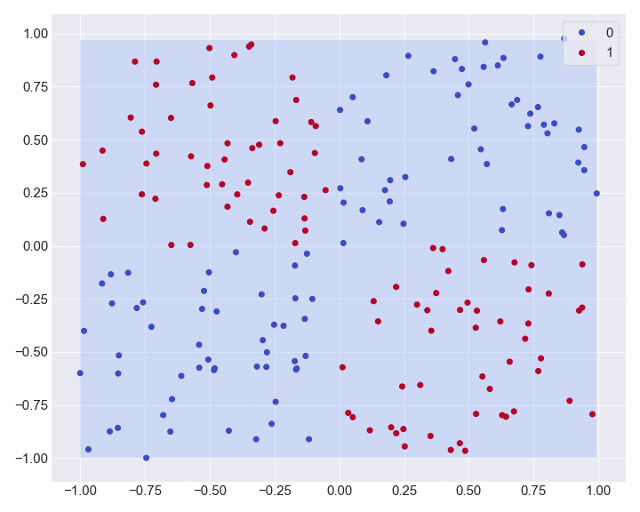

Open this tutorial in a jupyter notebook.
XOR¶
Let’s try to solve the XOR problem. This problem consist to classify two classes distributed as follow:
This distribution is not linearly separable, so we will need non-linearity transformations in our model to be able to correctly classify each elements.
Data¶
import numpy as np
import nets
# [1, 1] quarter
d1 = np.random.rand(50, 2)
# [-1, -1] quarter
d2 = (np.random.rand(50, 2) - 1)
# Labels
l1 = np.ones(len(d1) + len(d2))
l1 = np.column_stack((l1, np.zeros(len(d1) + len(d2))))
# [-1, 1] quarter
d3 = np.random.rand(50, 2)
d3[:,0] -= np.ones(50)
# [1, -1] quarter
d4 = np.random.rand(50, 2)
d4[:,1] -= np.ones(50)
# Labels
l2 = np.zeros(len(d3) + len(d4))
l2 = np.column_stack((l2, np.ones(len(d1) + len(d2))))
# All the data
data = nets.Tensor(np.concatenate((d1, d2, d3, d4)))
labels = np.concatenate((l1, l2)).astype(int)
labels = nets.Tensor(labels)
# And all labels :
# [1, 0] one hot encoded: 0 -> blue
# [0, 1] one hot encoded: 1 -> red
print(f"data shape: {data.shape}")
print(f"labels shape: {labels.shape}")
Out:
data shape: (200, 2)
labels shape: (200, 2)
import matplotlib.pyplot as plt
scatter = plt.scatter(data.data[:,0], data.data[:,1], s=40, c=np.argmax(labels.data, axis=1), cmap='coolwarm')
plt.legend(*scatter.legend_elements(), loc=1, frameon=True)
Build a Model¶
Now that the data is generated, we need to create a model with non-linear functions (here tanh).
class XOR(nn.Module):
def __init__(self, input_dim, hidden_dim, output_dim):
super().__init__()
self.layer1 = nn.Linear(input_dim, hidden_dim)
self.layer2 = nn.Linear(hidden_dim, hidden_dim)
self.layer3 = nn.Linear(hidden_dim, output_dim)
def forward(self, inputs):
out1 = nets.tanh(self.layer1(inputs))
out2 = nets.tanh(self.layer2(out1))
out3 = self.layer3(out2)
return out3
model = XOR(2, 10, 2)
# Let's check the architecture
model
Out:
XOR(
(layer1): Linear(input_dim=2, output_dim=10, bias=True)
(layer2): Linear(input_dim=10, output_dim=10, bias=True)
(layer3): Linear(input_dim=10, output_dim=2, bias=True)
)
Optimization¶
You need to define criterion (how the loss / errors are measured from the truth) and an optimizer (a.k.a update rules).
from nets.optim import SGD, Adam, RMSprop
from nets.nn import CrossEntropyLoss, MSELoss
from nets.nn.utils import one_hot
# How much do we update the parameters
LEARNING_RATE = 0.01
optimizer = Adam(model.parameters(), lr=LEARNING_RATE)
criterion = CrossEntropyLoss()
Training¶
EPOCHS = 5000
history = []
for epoch in range(EPOCHS):
# Gradients accumulates, therefore we need to set them to zero at each iteration
model.zero_grad()
# Predictions
predictions = model(data)
loss = criterion(predictions, labels)
# Compute the gradient
loss.backward()
# Update the parameters
optimizer.step()
# Record the loss for plotting
history.append(loss.item())
print(f"\repoch: {epoch} | loss: {loss.item():1.3E}", end="")
Out:
epoch: 4999 | loss: 6.602E-06